O problema
A falta de controle no processo de aquisição pode gerar atrasos, compras inadequadas, custos excessivos
Na prática, o processo de aquisição da POLITEC começa com a identificação da necessidade pela unidade requisitante, seguida da elaboração do DFD e da assinatura do diretor-geral. Depois, são elaborados o ETP, a análise de riscos, quando aplicável, e o TR. Em seguida, realiza-se a pesquisa de preços em plataformas como o Compras.gov.br, formaliza-se o processo no SIGADOC e no SIAG, verifica-se a disponibilidade orçamentária e providenciam-se as análises técnicas e jurídicas necessárias. Por fim, define-se a modalidade de contratação, por licitação ou contratação direta, conforme a legislação. O tempo costuma se perder na elaboração e revisão dos documentos, na coleta e validação de preços, nas assinaturas, nas análises dos setores envolvidos e na correção de pendências processuais.
jurídicas e na correção de pendências pode prolongar as contratações e comprometer o atendimento das demandas institucionais. Além disso, inconsistências nos documentos, como DFD, ETP e TR, podem gerar devoluções e retrabalho, enquanto falhas na pesquisa de preços podem comprometer a estimativa de custos e a economicidade da contratação. Esses impactos devem ser comprovados por evidências, como os registros de tramitação no SIGADOC e no SIAG, o histórico de devoluções e correções, os pareceres técnicos e jurídicos e a comparação entre os preços estimados e os contratados
AS-IS · o processo antes do MVP
O caminho real, com quem faz, o que entra, onde espera e o que é automatizável. Fonte: tabela AS-IS do projeto.

Fluxograma AS-IS · amarelo: etapa manual; tracejado: ponto de espera. Os números correspondem à tabela. Fonte Mermaid.
| Etapa | Quem faz | Entra | Ação | Sai | Sistema | Regra | Onde espera | Tempo | Automatizável |
|---|---|---|---|---|---|---|---|---|---|
| 1. Identificação da necessidade | Unidade requisitante | Demanda do setor | Registra a necessidade | Demanda formalizada | E-mail e planilha | Previsão no plano anual | Fila da unidade | — | Pouco |
| 2. DFD | Unidade requisitante e diretor-geral | Demanda formalizada | Elabora e assina o DFD | DFD assinado | Word e SIGADOC | Assinatura do diretor-geral | Aguardando assinatura | — | Não |
| 3. ETP, riscos e TR | Equipe de planejamento | DFD assinado | Elabora e revisa os documentos | ETP, risco e TR | Word e SIGADOC | Modelos institucionais | Revisão | — | Pouco |
| 4. Pesquisa de preços | Equipe de compras | TR aprovado | Pesquisa no Compras.gov.br e valida | Estimativa de preços | Compras.gov.br | Três cotações | Coleta | — | Pouco |
| 5. Formalização | Equipe de compras | Processo instruído | Cria o número no SIGADOC e no SIAG e verifica a dotação | Processo formalizado | SIGADOC e SIAG | Disponibilidade orçamentária | Fila dos sistemas | — | Sim, com apoio humano |
| 6. Análises e modalidade | Setores técnico, orçamentário e jurídico | Processo formalizado | Emite pareceres e define a modalidade | Processo apto à contratação | SIGADOC | Lei nº 14.133/2021 | Fila de análise | — | Não |
TO-BE · o processo com o MVP
O que muda em cada etapa, quem passa a fazer e o ganho esperado. Fonte: tabela TO-BE do projeto.

Fluxograma TO-BE · verde: máquina (automação local); azul: pessoa (fé pública). Fonte Mermaid.
A POLITEC passará a contar com um processo de aquisição integrado, padronizado e rastreável, reduzindo prazos, retrabalho e falhas, com maior transparência e segurança nas contratações públicas.
- DFD a TR
Checklist e modelos padronizados com os campos do processo
A pessoa assistida pela máquinaMenos retrabalho e devolução - Pesquisa de preços
Conferência automática de três cotações e da estimativa
A pessoa assistida pela máquinaMenos erro de preço - Acompanhamento
Painel com etapa, prazo e pendência por processo
A máquina (automação)Atraso visível e cobrança antes do vencimento - SIGADOC e SIAG
Registro do número e da data no processo
A pessoa assistida pela máquinaRastreabilidade
| Etapa | O que muda | Quem faz | Benefício | Esforço |
|---|---|---|---|---|
| DFD a TR | Checklist e modelos padronizados com os campos do processo | A pessoa assistida pela máquina | Menos retrabalho e devolução | Médio |
| Pesquisa de preços | Conferência automática de três cotações e da estimativa | A pessoa assistida pela máquina | Menos erro de preço | Médio |
| Acompanhamento | Painel com etapa, prazo e pendência por processo | A máquina (automação) | Atraso visível e cobrança antes do vencimento | Baixo |
| SIGADOC e SIAG | Registro do número e da data no processo | A pessoa assistida pela máquina | Rastreabilidade | Baixo |
O que o MVP entrega
Tela-assinatura: Kanban das 9 etapas da Lei 14.133.
Menu do MVP: PainelProcessosNova aquisiçãoPreçosConfiguração
Regras de negócio
| ID | Regra | Quando | Tipo | Exceção |
|---|---|---|---|---|
RN01 | Números do SIGADOC e do SIAG são obrigatórios e únicos | No registro | Validação | Nenhuma |
RN02 | A etapa só é concluída com os documentos que ela exige | Ao concluir a etapa | Negócio | Nenhuma |
RN03 | Pendência aberta impede o avanço da etapa | Ao concluir a etapa | Negócio | Resolvida a pendência |
RN04 | O processo fica atrasado quando passa o prazo em dias corridos | No painel | Cálculo | Processo concluído |
Papéis
| Papel | Quem é | O que vê | O que faz | O que não faz | Registro |
|---|---|---|---|---|---|
| Unidade requisitante | Setor que identifica a necessidade | O processo e as pendências | Justifica a demanda e faz o DFD | Decidir a modalidade ou assinar | Número do processo e DFD |
| Equipe de planejamento | Servidores da aquisição | DFD, ETP, risco e TR | Elabora e revisa os documentos | Aprovar as análises jurídica e técnica | Versões e anexos |
| Setor de compras | Equipe de aquisições | Processo, documentos e preços | Instrui o processo e formaliza no SIGADOC e no SIAG | Decidir o mérito | Tramitação e pendências |
| Análises técnica, orçamentária e jurídica | Setores competentes | Documentos da sua área | Emite parecer | Assinar pela autoridade | Pareceres e datas |
| Diretor-geral e autoridades | Autoridades competentes | Processo instruído | Aprova e assina | Delegar a decisão ao sistema | Aprovações |
Métricas do piloto
Como testar
O MVP é um `index.html` offline, com dados fictícios. Abra index.html.
cd Apps/controle-aquisicoes python construir.py python testes/testar.py python testes/cenarios.py python testes/jornada.py # Lightpanda (via WSL, CDP em 9222 e HTTP em 8000) python testes/jornada.py --cdp http://127.0.0.1:9222 --base http://127.0.0.1:8000
Documentos: PROJETO.md · sprint.md · README.md